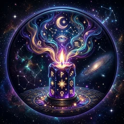
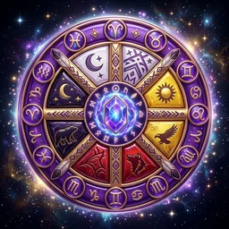
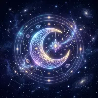
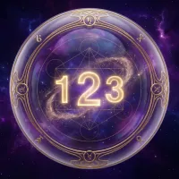

Čerstvé
vhledy
Mystický Blog
Ponořte se do hlubin tajných nauk. Články, návody a postřehy ze světa hvězd a karet.
Nejnovější články

Minulý život: 7 znamení, že si neseš vzpomínky duše
Strach, který nemá původ v tomhle životě. Místa, která znáš, ačkoli jsi tam nikdy nebyl. Talent, který tě nikdo neučil. Sedm znamení, že si duše nese vzpomínky — a jak s nimi pracovat.

Silové zvíře: Jak najít svého duchovního průvodce
Silové zvíře tě podle šamanské tradice provází celý život — v instinktech, snech i setkáních. Pět cest, jak svého průvodce rozpoznat, významy nejčastějších zvířat a práce s nimi v běžném dni.
Karta Blázen (0) v tarotu: Nejmoudřejší karta balíčku
Blázen má číslo nula, kráčí k propasti a směje se — a přesto je nejmoudřejší kartou tarotu. Význam v lásce, práci, jako karta dne, obrácený Blázen a Bláznova cesta velkou arkánou.
Andělské číslo 222: Co znamená, když ho vidíš všude
Vidíš 222 na hodinách, účtenkách i značkách? Andělské číslo 222 nese poselství rovnováhy, trpělivosti a důvěry v proces. Co znamená v lásce, práci i na duchovní cestě — a 5 věcí, které udělat.
Letní láska podle hvězd: Proč hoří rychle a jak poznat, že vydrží
Letní lásky hoří jasněji než kterékoli jiné — a v září často zhasnou. Zjisti, proč léto romantice astrologicky přeje, která znamení teď přitahují nejvíc a podle čeho poznáš, že tvoje letní láska přežije podzim.
Lví sezóna 2026: Měsíc odvahy, který letos korunuje zatmění
Od 23. července vládne obloze Lev — sezóna odvahy, tvořivosti a viditelnosti. Letos ji navíc korunuje zatmění Slunce přímo ve Lvu. Zjisti, co přinese tvému znamení a jak ji využít čtyřmi lvími rituály.
Karta Milenci (VI) v tarotu: Význam v lásce, práci i obrácená
Milenci nejsou jen karta lásky — jsou to karta volby. Co znamená šestá velká arkána ve výkladu na lásku, práci, jako karta dne i v obrácené poloze — a proč se jí říká křižovatka srdce.
Zatmění Slunce 12. srpna 2026 ve Lvu: Co přinese a jak se připravit
12. srpna 2026 nastane úplné zatmění Slunce ve znamení Lva — první viditelné z Evropy po desítkách let. Zjisti, co zatmění znamená astrologicky, koho se dotkne nejvíc a co v den zatmění (ne)dělat.

Proč se ti vrací stejný sen? Co znamenají opakující se sny
Padáš, utíkáš, vypadávají ti zuby — a pořád dokola? Opakující se sny nejsou náhoda, ale doporučený dopis od tvé psychiky. Zjisti, co znamenají ty nejčastější a jak je zastavit ve 4 krocích.

Osobní měsíc v numerologii: Proč se ti tento měsíc (ne)daří
Každý měsíc má pro tebe jinou energii. Nauč se jednoduchý výpočet osobního měsíce, pochop význam čísel 1–9 a přestaň plavat proti proudu — plánuj podle svého rytmu.
Chiron: Raněný léčitel v tvé natální kartě — kde skrývá tvá největší rána i dar
Chiron v natální kartě označuje místo tvé nejhlubší rány — ale také tvůj největší dar. Zjisti, co ti říká znamení a dům Chirona a proč ho astrologové považují za klíč k uzdravení.
Čtyři živly v astrologii: Oheň, Země, Vzduch a Voda — průvodce energiemi zvěrokruhu
Oheň, Země, Vzduch, Voda — čtyři živly tvoří základ celé astrologie. Zjisti, jaký živel dominuje ve tvém horoskopu, co to říká o tvé osobnosti a jak živly ovlivňují vztahy.
Pentagramy v Tarotu: Průvodce materiálním světem, penězi a kariérou
Pentagramy nejsou nudnou suitou. Jsou mapou materiálního světa — práce, peněz, těla i hojnosti. Průvodce všemi 14 kartami zemního živlu.
Hůlkové karty v Tarotu: Oheň, vášeň a energie, která mění životy
Hůlky jsou suitou ohně, vůle a životní síly. Průvodce všemi 14 kartami — od Esa po Krále — a jak je číst v kontextu kariéry, lásky i varování.
Numerologie jména: Co skrývá vaše křestní jméno a jak ho změna ovlivní osud
Vaše jméno vibruje na konkrétní frekvenci. Pythagorická numerologie odhalí, co vaše křestní jméno říká o vaší osobnosti — a co se stane, když ho změníte.
Čakrová praxe: bezpečný průvodce pro začátečníky
Čakry jako sebereflexe, ne diagnóza. Jemný průvodce orientačními signály, bezpečnými technikami a 10minutovou praxí bez zdravotních slibů.
Nový Měsíc: Rituál pro začátečníky a jak správně zasadit semena přání
Nový Měsíc je nejsilnější okamžik pro zasazení záměrů. Průvodce rituálem pro začátečníky — bez mystického balastu, jen čistá praxe.
Karta Soudce (XX) v Tarotu: Volání vyššího já a karmická bilance
Karta Soudce nepřichází jako trest — přichází jako volání. Probuzení, absolution a karmická bilance v jednom mocném obrazu.
Partnerská kompatibilita v numerologii: Jsou vaše čísla osudu ve shodě?
Numerologie odhaluje hlubší vrstvu partnerské dynamiky než horoskopy. Zjistěte, jak vaše životní čísla spolupracují — a kde leží největší výzvy.
Mečové karty v Tarotu: Průvodce bolestí, pravdou a mentální silou
Meče jsou nejobávanější suitou tarotu. Ale co když právě tyto karty přinášejí osvobozující pravdu, kterou jste potřebovali slyšet?
Keltský kříž: Jak číst nejslavnější tarotové rozložení krok za krokem
Keltský kříž je nejkomplexnější tarotové rozložení, jaké existuje. Naučte se číst všech 10 pozic a poskládat z nich jeden ucelený příběh.
Šamanské Kolo: Jak zjistit své totemové zvíře a co vám o sobě prozradí
Každý z nás se rodí pod ochranou konkrétního totemového zvířete. Šamanské Kolo vám ukáže, které to je — a co vám o vaší cestě životem prozrazuje.
Retrográdní Venuše 2026: Co čekat v lásce, vztazích a financích
Venuše retrográdní 2026 — kdy začíná, co to znamená pro tvůj vztah, lásku a finance. Výklad pro všechna znamení: Beran, Býk, Blíženci, Rak, Lev, Panna, Váhy, Štír, Střelec, Kozoroh, Vodnář, Ryby. Praktický průvodce jak toto období přežít a využít ve svůj prospěch.
Úplněk v Panně: Rituál, výklad a co čekat pro každé znamení
Úplněk v Panně přináší čas čistoty, přehodnocení a propuštění. Zjistěte přesný výklad pro vaše znamení, rituál a jak tuto lunaci vědomě využít.
Úplněk v Kozorohu: Čas sklizně ambicí a uvolnění strachu z neúspěchu
Úplněk v Kozorohu osvěcuje kariéru, ambice a vztah k autoritě. Rituál a výklad pro každé znamení.
Merkur v retrográdě 2026: Co to skutečně znamená pro každé znamení
Merkur v retrográdě nemusí být pohromou. Zjistěte, co toto astrologické období přináší každému ze 12 znamení, jak se připravit a jak retrográdu využít ve svůj prospěch.
Karmický vztah vs. Spřízněná duše: Proč vám to v lásce nevychází?
Stále se točíte v bludném kruhu toxických vztahů? Možná potkáváte karmické učitele místo své skutečné spřízněné duše. Zjistěte ten zásadní rozdíl.
Životní číslo: Starověký klíč k vaší karmě a skrytému potenciálu
Vaše datum narození není matematická náhoda. Objevte, jak starořecká numerologie dešifruje mapu vaší duše a jaký osudový úkol vám byl svěřen.
Slunce, Měsíc, Ascendent: Vaše svatá astrologická trojice
Číst pofidérní horoskopy v časopisech z vás astrologa neudělá. K pochopení vaší skutečné osobnosti musíte znát svou velkou trojku.
Architektura Osudu: Skryté tajemství 12 Astrologických domů
Myslíte si, že znát své znamení stačí? Pokud neznáte své Astrologické domy, čtete z mapy svého života jen obal s názvem knihy. Pojďme do hloubky.
Štír muž a Panna žena: Kompatibilita vztahu, láska a výzvy
Štír muž a Panna žena – jeden z nejsilnějších párů zvěrokruhu? Detailní analýza kompatibility, lásky, komunikace a sexuální chemie tohoto spojení.

Futhark: Syrová krása Run a proč severská magie není hrou pro slabé
Zatímco Tarot odpovídá v jemných psychologických nuancích, Runy do vás vrhnou syrovou, ostrou severskou pravdu. Jak bezpečně pracovat s tímto starodávným systémem?
Co je synastrie a jak funguje partnerská astrologie?
Synastrie je astrologická metoda porovnávání dvou natálních karet. Zjistěte, co synastrie skutečně ukazuje, jak ji číst a proč sluneční znamení nestačí pro posouzení vztahu.
Andělská čísla a Synchronicita: Co znamená opakované 11:11 a 22:22?
Podíváte se na telefon – je přesně 11:11. Účet za kávu je 222 Kč. Před vámi jede auto s poznávací značkou 333. Ztrácíte rozum, nebo s vámi promlouvá Vesmír?
5 znamení, že potkáváte svou spřízněnou duši
Jak poznáte, že jste potkali svou spřízněnou duši? Pět konkrétních znamení – a proč spřízněná duše nemusí být ta, u které zůstanete navždy.
Číslo Výrazu, Duše a Osobnosti: Jak je vypočítat a co prozradí
Logo (Číslo Výrazu), Číslo Duše a Číslo Osobnosti – tři klíčové numerologické ukazatele, které jdou daleko za Číslo Osudu. Kompletní průvodce výpočtem a výkladem.
Iluze jménem Spřízněná duše: Proč nás tytéž vztahy chronicky stahují ke dnu?
Motýlci v břiše, pocit, že se znáte staletí, a pak náhlý a zničující pád. Proč astrologická praxe nabádá k maximální opatrnosti před karmickými svazky?
Pohárové karty v Tarotu: Skrytý svět emocí, lásky a intuice
Barva pohárů v malých arkánách vypovídá o našem emocionálním životě, lásce a intuici. Naučte se číst poselství elementu vody.
Vypadané zuby a sen o pádu: Co se vám snaží říct vaše stínové nevědomí?
Myslíte si, že ten mrazivý sen, v němž nemůžete utéct, je jen hloupost? Sny jsou královskou cestou do hlubin toho nejtemnějšího uvnitř nás. Pojďme je rozluštit.
Ascendent vs. Sluneční znamení: Jaký je skutečný rozdíl?
Proč se někdy nevztahujete ke svému slunečnímu znamení? Ascendent odhaluje, jak vás vidí svět. Pochopte rozdíl a zjistěte, jaký je váš Ascendent.
7 Čaker: Zevrubná anatomie neviditelného energetického světla
Myslíte si, že tělo končí vaší kožní bariérou? Existuje prastará mapa sedmi silových generátorů, u níž by zablokování i jediné pumpy ohrozilo všechny psychofyzikální vrstvy.
Za oponou prostoru a času: Skutečné umění Scryingu z Křišťálové koule
Pokud považujete křišťálovou kouli jen za rekvizitu pro hollywoodské filmy o čarodějnicích, připravujete se o jednu z nejsilnějších technik starověkého zření.
Tajemství snů: Jak správně dekódovat noční vizualizace
Padání z útesu, vypadávající zuby, pronásledování... Každou noc hrajeme ve vlastním filmu, jehož autorem je naše podvědomí. Jak těmto poselstvím porozumět?
Zvěrokruh a peníze: Kdo se topí ve zlatě a kdo má průvan v peněžence?
Každé znamení má jiný skrytý postoj k financím. Zjistěte, jestli jste od přírody magnet na peníze, nebo se musíte naučit zkrotit nutkání utrácet.
Věda a Esoterika Biorytmů: Proč neštěstí nechodí náhodou, ale v sinusoidách
Některé dny sršíte vtipem a všechno se daří. O týden později máte pocit, že se proti vám spikl svět. Co když ale tyto výkyvy nejsou náhodné, ale přísně matematické?
Skrytý kód těla: Proč máte dny, kdy vám padá všechno z rukou?
Jste bez energie, v práci děláte chyby a s partnerem jste na nože. Dříve se tomu říkalo smůla. Dnes tomu říkáme kritický den Biorytmu.
Hrůzostrašná karta Věž XVI: Nekompromisní hlubinná transformace plamenem
Pokud existuje karta, u níž zkušeným kartářkám hrkne v hrudi, nebývá to s populární legendou opředená Smrt, nýbrž hrůzostrašná a ničivá karta Věž.
Jak odrazit energetické upíry: Štíty v každodenním životě
Znáte lidi, po kterých se cítíte, jako by vás přejel parní válec? Ukážeme vám, jak se zamknout před odsáváním životní energie.
Zatmění Slunce a Měsíce 2026: Jak přežít kosmický chaos?
Zatmění nejsou jen pěkná astronomická podívaná. V astrologii fungují jako urychlovače osudu. Připravte se na to, že věci naberou spád.
Proč to Pannám a Beranům neklape? Anatomie vztahové katastrofy
Některé znakové kombinace vypadají na papíře skvěle, ale v reálu končí slzami a křikem. Pojďme si rozebrat klasický příklad nesourodého spojení.
Retrográdní Merkur: Ultimátní průvodce přežitím
Rozbité telefony, ztracené emaily, ex-partneři v DMs... Vítejte v týdnech Retrográdního Merkuru. Jak tuto dobu otočit ve svůj prospěch?
Manifestace a Zákon Přitažlivosti: 3 fatální chyby, které vás blokují
Tak rádi byste přitáhli hojnost a lásku, ale The Secret pro vás nefunguje? Děláte pravděpodobně jednu z těchto tří začátečnických chyb.
Jak vyložit Tarot doma zadarmo: Manuál pro úplné začátečníky
Chcete se zeptat karet na budoucnost, ale bojíte se, že něco pokazíte? Tento průvodce vás krok za krokem provede prvním bezpečným domácím výkladem.
Saturův návrat: Proč je 29. rok života zlomový a co ti přinese
Saturův návrat kolem 29. roku zásadně mění kariéru, vztahy i identitu. Zjisti, co tě čeká, jak se připravit a proč jde o nejdůležitější tranzit v životě.
Karta Hvězda (XVII) v Tarotu: Naděje, uzdravení a světlo po temnotě
Karta Hvězda v tarotu symbolizuje naději a uzdravení po těžkých časech. Poznej její symboliku, výklad v lásce, kariéře i kombinace s jinými kartami.
Uzel osudu v astrologii: Severní a Jižní uzel — tvoje karmická cesta
Co jsou severní a jižní uzel osudu v astrologii? Zjisti svou karmickou misi, co pustit z minulých životů a kdy přicházejí velké životní zlomy každých 18,5 let.
Osobní rok v numerologii: Co tě čeká v roce 2026
Zjisti, co ti přinese rok 2026 podle numerologie. Vypočítej svůj osobní rok, pochop energii každého čísla a využij ji vědomě ve svůj prospěch.
Karta Měsíc (XVIII) v Tarotu: Iluze, podvědomí a skryté pravdy
Karta Měsíc v tarotu odhaluje iluze, podvědomé strachy a skryté pravdy. Zjisti, co znamená ve vztazích, kariéře a jak projít jejím mlžným územím.
Attachment styly v lásce: Proč se opakují stejné vzorce ve vztazích
Proč přitahujeme stále stejné typy lidí? Pochop attachment styly — jistý, úzkostný, vyhýbavý — a zjisti, jak změnit hluboké vztahové vzorce.
Létání ve snu: Co znamená a co ti chce podvědomí říct
Létání ve snu je jedním z nejčastějších a nejkrásnějších snových zážitků. Zjisti, co ti chce podvědomí říct a jak tyto sny vědomě využít.
Feng Shui doma: Jak upravit prostor pro příliv energie, lásky a peněz
Feng shui doma není jen o dekoraci. Naučte se, jak pomocí bagua mapy aktivovat zóny prosperity, lásky a hojnosti ve svém bytě nebo domě.
Karta Slunce (XIX) v Tarotu: Radost, úspěch a životní síla
Karta Slunce v tarotu je symbolem radosti, vítězství a životní síly. Zjistěte, co přesně tato karta říká ve výkladu a jak přivolat její energii.
Mistrovská čísla 11, 22 a 33 v numerologii: Dar nebo prokletí?
Mistrovská čísla 11, 22 a 33 nesou mimořádný potenciál i mimořádnou zátěž. Zjistěte, co znamenají, jak je poznat ve svém životopisu a jak s nimi pracovat.
Jak se připravit na nadcházející magický Úplněk
Úplněk je časem uvolnění a silných energií. Zjistěte, jaké rituály vám pomohou tuto energii využít naplno.
Andělská čísla 333, 444, 555 — co vám říká vesmír?
Vidíte všude 333, 444 nebo 555? Každé andělské číslo nese přesnou zprávu. Přečtěte si, co vám vesmír opakovaně posílá — a jak na tuto komunikaci správně reagovat.
Jak číst natální kartu: Kompletní průvodce pro začátečníky
Natální karta je mapa vaší duše zapsaná v hvězdách v moment vašeho narození. Naučte se číst planety, domy a aspekty — i jako úplný začátečník.
Lilith v natální kartě: Temná bohyně a tvůj skrytý rebel
Lilith v natální kartě označuje místo, kde žijete svou nejsilnější, nejdivočejší a nejméně společensky přijímanou energii. Průvodce Černou Měsíční Lilith v každém znamení.
Runový výklad doma: Průvodce pro začátečníky krok za krokem
Runy jsou prastarý věštecký systém skandinávských Vikingů. Naučte se dělat runové výklady doma — od výběru run přes kladení až po interpretaci symbolů.
Pluto ve Vodnáři 2024–2043: Největší generační transformace za 248 let
Pluto vstoupilo do Vodnáře a zůstane tam až do roku 2043. Co tato historická událost znamená pro lidstvo, technologii, AI, revoluci a vaše osobní transformace?
Váš Měsíční znak: Co Měsíc v natální kartě říká o vaší duši
Sluneční znamení znáte. Ale víte, kde byl Měsíc, když jste se narodili? Měsíční znak odhaluje vaše emoce, vnitřní svět, potřeby a to, jak se cítíte bezpečně.
Čínský horoskop 2026: Rok Ohnivého Koně — co čeká každé zvíře
Rok 2026 je Rokem Ohnivého Koně. Přečtěte si, co tento divoký, vášnivý a nepředvídatelný rok přinese každému z 12 čínských zvířat — a jak se na něj připravit.
Jak fungují andělské karty: Průvodce pro začátečníky
Andělské karty nejsou tarot. Jsou laskavým, povzbudivým systémem, který vás spojuje s vyššími průvodci. Zjistěte, jak fungují, jak s nimi pracovat a jak interpretovat poselství.
Co je aura: Jak ji vidět, číst a čistit
Aura je energetické pole obklopující každou živou bytost. Naučte se, jak auru vidět, jaké barvy co znamenají a jak ji pravidelně čistit pro více energie a ochranu.